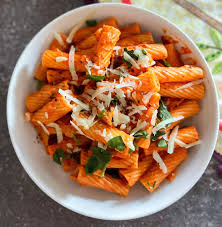

Pasta Recipe
Home

Description
Pasta is one of my comfort foods , its my go to for when I have busy weeks its so quick and simple to make!
Ingredients:
- tomatoes and lots of it!
- Garlic paste
- Pasta! of your own choosing , I prefer macaroni
- some veggies: onions , peppers and coriander
- chicken stock seasoning or any seasoning of your choice to taste
- Salt
- Extra virgin olive oil
The following are optional:
- protein of your choice Tuna goes really well with this dish
- Parmesan
Steps:
- Fill a large pan with water , let it come to a boil when it does add the pasta and a handful of salt
- While the pasta cooks, chop the onions and peppers and put it in a medium heat pan with a drizzle of extra virgin olive oil
- Once the veggies are nice and soft we chop 6-8 tomatoes up and put it in a blender along with the corainder and some garlic paste
- Pour the blended mixture into pan along with the the caramalised onions and peppers, once everything comes to a simmer add some seasoning of your choice Now wouild be the time of adding your optional protein should you wish to do so
- Cover the pan with a lid and let it all come together, at this point we can drain our pasta
- Now is the time to combine the two by pouring the pan mixture containing our sauce into the pan containing our pasta
- You can serve this up with a dash of parmesan
enjoy!>